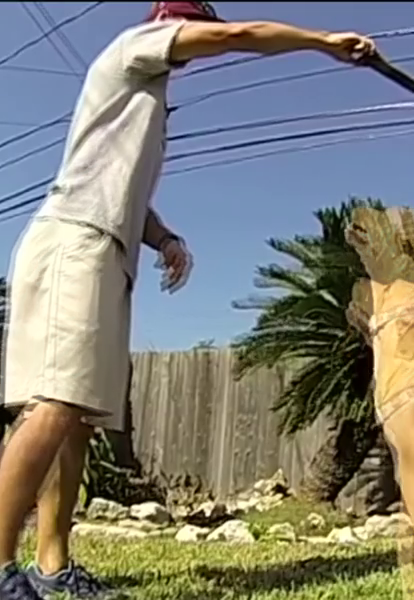
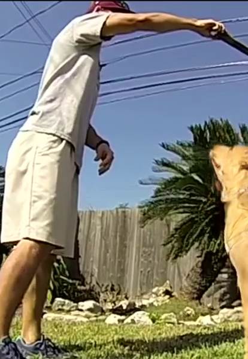
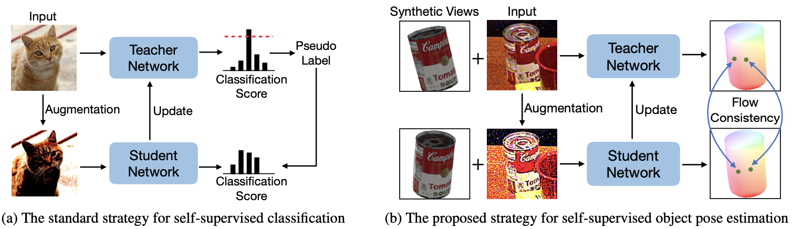
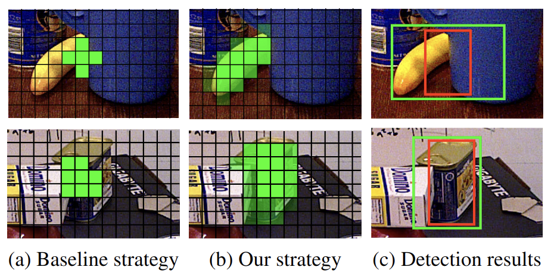
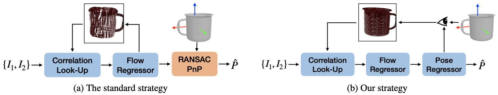

Input
HFD outputCVPR 2025 Video frame interpolation
Hierarchical Flow Diffusion for Efficient Frame Interpolation
Coarse-to-fine flow diffusion for accurate and efficient video frame interpolation.
I am a research engineer at Insta360. I received my master’s degree from Xidian University in June 2024, advised by Yinlin Hu. Before that, I received my bachelor’s degree from Xidian University in 2021.
My current research interests lie in embodied intelligence, vision-language models, and agents. I am interested in how visual understanding can support reasoning and interaction with the physical world.
My earlier work focused on 6D object pose estimation, optical flow estimation, and video frame interpolation, exploring geometry and motion in visual data. Building on this background, I aim to develop visually grounded agents that can understand their surroundings and act effectively.

Input
HFD outputCVPR 2025 Video frame interpolation
Coarse-to-fine flow diffusion for accurate and efficient video frame interpolation.

ICCV 2023 Self-supervised learning
Learning object pose from unannotated real RGB images through geometry-guided flow consistency.

CVPR 2023 6D object pose estimation
Using object rigidity and visible regions to improve detection in cluttered scenes.

CVPR 2023 6D object pose estimation
Jointly refining optical flow and object pose with explicit 3D shape constraints.
— Present
Research in computer vision and deep learning.
—
Advised by Yinlin Hu.
—
Worked closely with Zhaoyang Liu.
Graduated in the top 5% of my class.